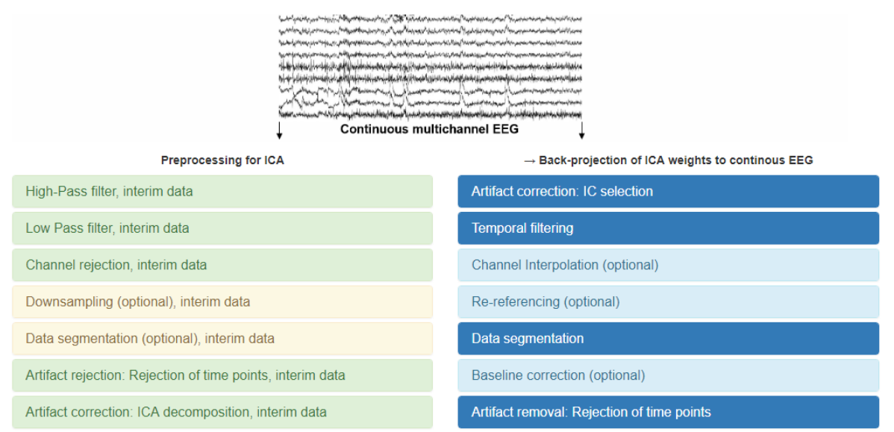

Im Gleichgewicht: Wie das Gehirn Denken und Bewegung zugleich steuert - Keeping Balance: How the Brain Manages Thinking and Moving at the Same Time
Brain activity while maintaining balance.
Brain activity while maintaining balance.

Research about how our brain processes everyday sound.

Research on brain connections within the tinnitus brain.

Measuring brain activity while walking.

This study examines whether mobile EEG can reliably measure brain activity during swimming.

This study looks at the reproducibility crisis in science by highlighting a surprisingly overlooked factor, language.

Study of how the brain handles different types of listening challenges using EEG.

Study on how the brain struggles to juggle attention and memory while driving and why mental overload can affect driving performance.

A short session of cycling may help people remember information better and feel less mentally tired, while swimming may affect the brain in ways that are not immediately visible in behaviour.